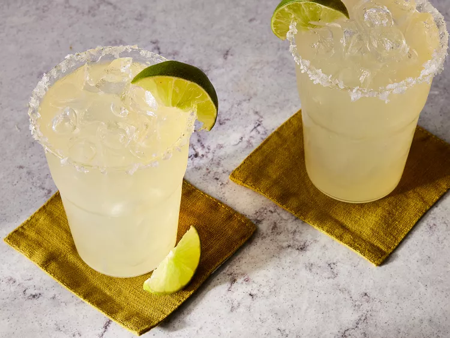

Beer Margaritas

Description
It's beerita time! Who would believe that beer would be the perfect solution to eradicating fluorescent green margaritas?
Well, it is. Best to use not-so-micro brews to avoid an overpowering beer flavor.
Use the limeade can to measure the ingredients, and adjust with extra water if the mixture seems too sweet.
Straining the pulp is always a good idea unless, of course, you like pulp.
Ingredients
- 1 (12 fluid ounce) can frozen limeade concentrate
- 12 fluid ounces tequila
- 12 fluid ounces water, or more as needed
- 12 fluid ounces beer
- ice
- 1 lime, cut into wedges
Steps
- Gather all ingredients.
- Pour limeade concentrate, tequila, water, and beer into a large pitcher. Stir until limeade has melted.
- Add plenty of ice to the pitcher and garnish with lime wedges. Adjust with additional water if needed.